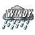

Dear all,
I am trying to incorporate pictures that are changing in function of the data found in XML files.
For example, reading the weather forecast from available feeds (e.g. WUnderground or Yahoo Weather) is great and give all the relevant information that are easily parsed by OpenRemote and displayed as text.
I am sure it is possible to have pictures representing some values from the XML file, such as replacing the data "Partly cloudy" by a nice icon representing this.
Can someone guide me in the steps that are needed for this or to any discussions about related topic?
So far I could not find the solution.
Any help would be greatly appreciated!
Kind Regards,
Domi.

{kind=link}
{kind=link}
{kind=link}
{kind=link}
{kind=link}
{kind=link}
|
I have not done this, but somthing simmilar. I think this should work.
In the UI designer add:
|
|
Dear Pieter, Thank you very much for the clear and prompt answer! Cheers, |
|
I did not collect all the pictures but with a XPath Expression (//response/current_observation/icon_url) I call the icon url from the Weatherunderground XML that I store on my Synology. |
|
Not sure I am following you... I understand that you have created a new http command such as "http://api.wunderground.com/api/e5z6zz4z3z3zz3/conditions/q/Mauricius/CurePipe.xml" with the XPath Expression (//response/current_observation/icon_url), but after I do not see how you got the pictures from the http address in OpenRemote and how you succeeded in not typing all the weather types. Thanks for this interesting alternative that I like to try. |
|
I just made on the panel a webview component and linked my sensor to that. The sensor looks like this In the command I used your link: http://api.wunderground.com/api/e5z6zz4z3z3zz3/conditions/q/Mauricius/CurePipe.xml It is necesary that in your XML is an path to : icon_url |
|
This is a good way to do it. |
|
Thanks Erwin for the clarification and for the screenshots! This is indeed a very easy set up. All the best! |
|
Erwin Bouwman says: I just made on the panel a webview component and linked my sensor to that... Did in your example, the picture is, but only in Google Chrome (PC Win7 x64). On iPad mini no, I see a white square. How to fix? |
{kind=link}
{kind=link}
{kind=link}